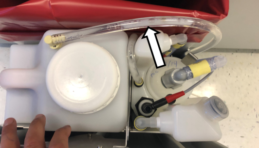
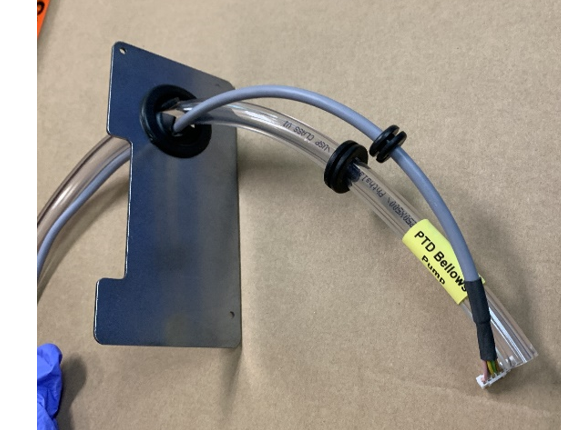
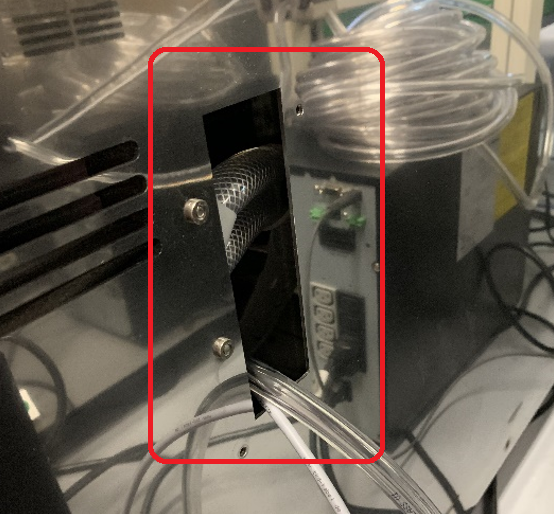
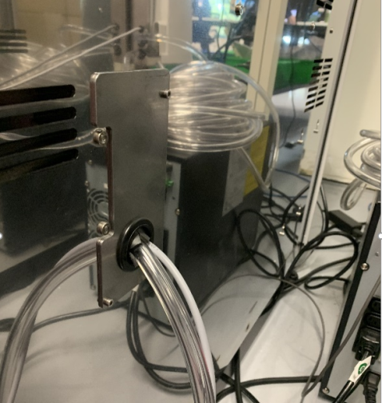
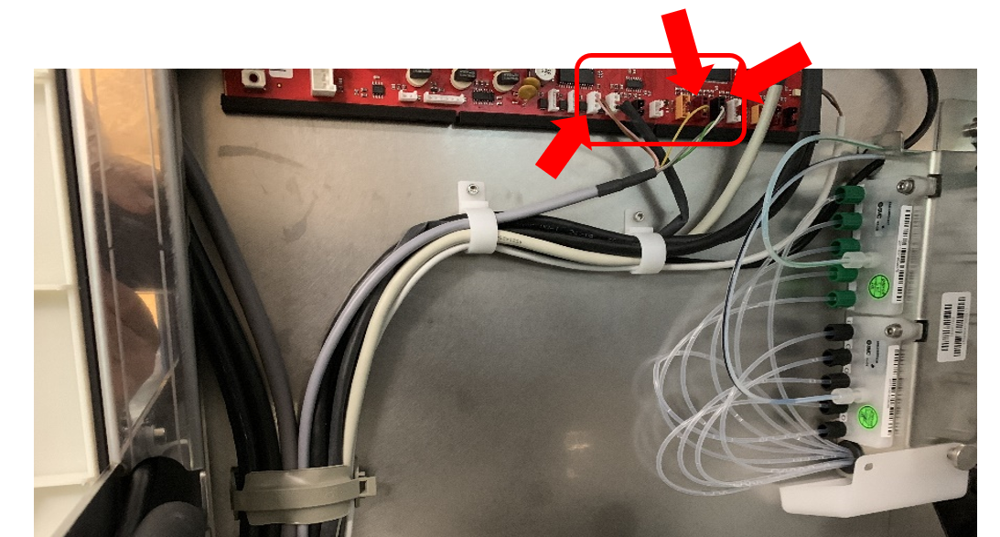
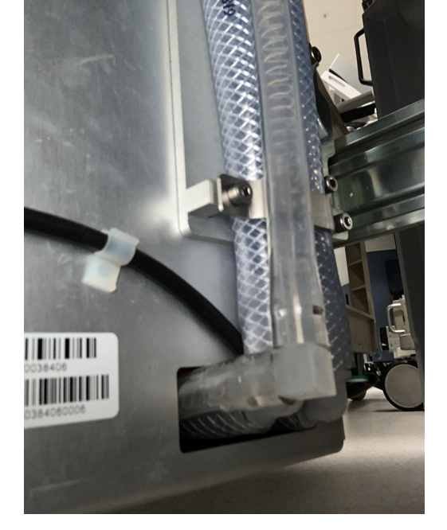
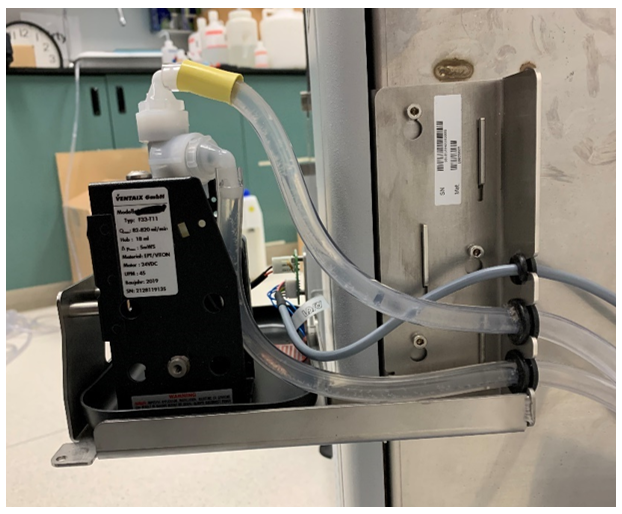

Route the Tubing & Signal Cable to Waste-to-Drain Pump

|
Note— It is easier to route both the WTD tubing and Signal cable at the same time. |
Parts and Materials Required


- Tube Cutter
- Waste to Drain Signal Cable
Procedure
 Route the tubing UP through the area between the Waste Drawer Bin, Removable Waste Bottle, and Permanent Bottle.
Route the tubing UP through the area between the Waste Drawer Bin, Removable Waste Bottle, and Permanent Bottle.

- Connect the tubing to the Removable Waste Bottle. Ensure that the tubing is below the level of the top of the Drawer.
- Route the tubing alongside the vacuum tubing through the Waste Drawer.
- Make an opening in the grommet on the back plate.
- Insert the Pump Signal Cable and Pump to Waste Drawer Tubing through the grommet in the back plate as shown.

- Route the cable/ tubing into the Panther System through the hole in the back panel.

- Install the Back Plate on to the System

- Route the cable up through the notch in the cable chase, through the chase, behind the cooling tubing and up the left side of the frame.
- Route and connect the wiring as shown below.
Connectors are White, Maroon and Black.

- Route and zip tie the tubing along the lower vacuum tubing as shown.
- Connect the elbow of the pump to waste drawer tubing to the waste bottle tubing.

- Verify that the waste drawer closes with minimal force, adjust tubing routing as needed.
- Install the tubing with grommet from the waste drawer through the bottom cut out of the mounting bracket and connect the tubing to the bottom barbed fitting (inlet) of the pump.

- Install the cable with grommet in the top cut out of the mounting bracket and connect the CAN cable to the WTD pump PC board.
- Connect the pump to drain tubing to the top barbed fitting (outlet) of the pump. Install the tubing with grommet through the middle cut out of the mounting bracket and to the drain.
Note—
Be sure to secure the tubing to the drain.
If using a floor drain, tubing can be secured to the grate using a zip tie. - Place the Waste to Drain cover over the module.
Secure the cover with the three screws from the bottom side of the module. - Proceed to Waste to Drain Verification.


 button at the top of the page to send feedback, comments, or change requests.
button at the top of the page to send feedback, comments, or change requests.